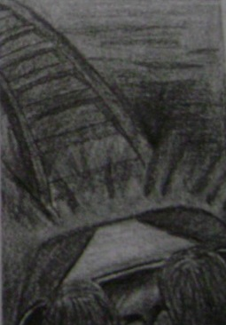

Normal ve mutlu bir hayat süren insanlar için bile öyle bir an gelir ki her şey biraz sıkıcı olur. Elbette ertesi günün iyi bir gün olacağını bilmek hoş bir şeydir ama çok fazla sürprizsiz bir hayat insanı köreltir. Ama biz o günlük rutinden kaçmanın bir yolunu biliyoruz, kısa bir süre için de olsa. Cevap uyarım ve heyecan aramakta yatar. Bu, günlük hayatın bile değerini bilmemizi sağlayacak bir sırdır.
Hayatımıza nasıl heyecan katarız? Film seyrederek, yolculuk yaparak, spor yaparak ve şans oyunları oynayarak... Ya da belki de heyecanın fantezi ite kaynaştığı bir eğlence parkına giderek. Çocukluğun o heyecan ve eğlence dolu dünyasına bir yolculuk yapalım.
Bu test için bir kâğıt ve kaleme gereksiniminiz olacak.
1. Parkın kapısından girdiniz ve önünde sıra bekleyen insanlardan oluşmuş bir kuyruk ile roller coaster (hız treni) belirdi. Binmek için sırada ne kadar bekleyeceksiniz?
2. Nihayet sıranız geldi ve hızla savrularak trende gidiyorsunuz. Hız sizde nasıl duygular uyandırıyor?
3. Seyrin en heyecanlı noktasında tren su dolu bir havuza daldı ve siz ıslandınız. Tam o anda ne diye bağırır ya da haykırırsınız?
4. İkinci olarak atlı karıncaya binmeye karar verdiniz. Ama tam dönerken bir nedenden ötürü sizin bindiğiniz at bozuldu, hareket etmiyor. Ata ne dersiniz?
5. Hız treni maceranız heyecanlıydı ama yeterli değildi. Eğer mükemmel bir hız treni tasarlayacak olsanız nasıl olurdu? Yolu detaylı olarak çiziniz.
